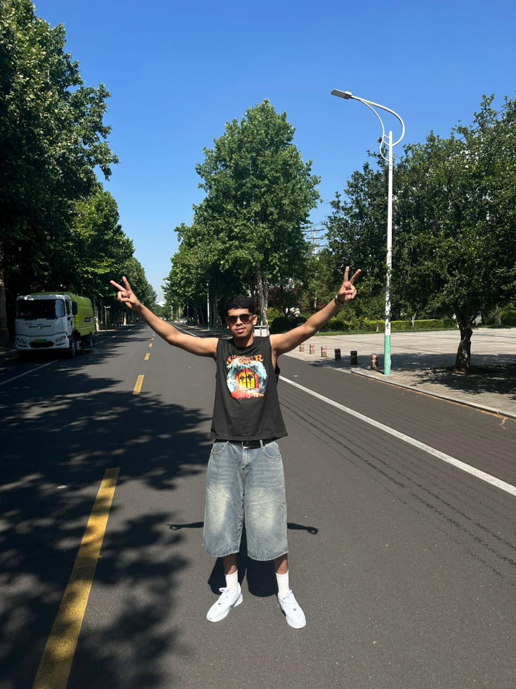

Official deployment hub for my Web Programming and C Programming coursework.
Welcome to my web portal. My name is Souhail-El Taoubi, and this website acts as my practical portfolio submission for my final exam. Below, you will find itemized breakdowns of my technical capabilities, software laboratory outputs, and independent credentials acquired over my academic terms.

Throughout this academic term, I have developed a strong foundational grasp of modern web technologies. Our practical layout labs involved crafting clean layouts using semantic HTML5 tags, establishing advanced presentation designs via modern CSS architectures, and integrating basic programmatic behavior using client-side scripts.
To inspect the comprehensive list of my ten weekly assignments, please follow this explicit link: workinwebprogramming.html.
During the previous semester, I completed our rigorous procedural computing pipeline focused strictly on the C language. My lab outputs covered core algorithmic engineering, handling logical arrays, complex conditional structures, and optimizing runtime execution parameters.
To inspect my external coding certifications, badges, and deep reflections, please follow this explicit link: workincprogramming.html.
My technical journey as Souhail-El Taoubi in the sphere of computer science began with a deep desire to comprehend the exact mechanics behind digital application logic and processing systems. When I first entered this educational program, my primary focus was to bridge the gap between basic user intuition and systematic engineering implementation. The foundational phase of my learning path was deeply rooted in establishing core logic pathways and constructing clear algorithmic strategies. I quickly discovered that writing functional software relies much less on memorizing programming syntax and much more on learning how to break down complex problems into clear, bite-sized components before writing any code inside an environment.
As my education moved into our formal laboratory blocks, the day-to-day work became much more hands-on and challenging. The instructional method of matching daily academic lectures with tough coding assignments forced me to deal directly with the practical frustrations of real-world debugging, system warnings, and error troubleshooting. I learned early on that troubleshooting edge cases, configuring proper environment parameters, and sorting out compiling issues are vital, everyday elements of a software developer's job. Overcoming these initial technical hurdles helped me build a methodical mindset when approaching complex assignments, teaching me to look closely at technical documentations and systematically trace my variables step-by-step.
As the curriculum advanced, my technical focus shifted from building single-file scripts to deploying live web solutions. Moving from basic, local programs to multi-page web applications made it absolutely necessary to learn proper version control systems and pick up clean modular layouts. Learning to use tools like GitHub and setting up live GitHub Pages completely upgraded my daily developer workflow. It introduced me to the basics of modern project deployment and public portfolio hosting, teaching me how to cleanly present my technical files to external evaluators while ensuring that my interfaces stay responsive and accessible across various device viewports.
In addition, my overall learning strategy places a strong emphasis on continuous self-guided study outside the standard classroom timeline. Because the web development and engineering landscape updates at such a fast pace, relying solely on classroom textbooks is not enough to keep up with current technical standards. I consistently support our official course materials by tackling challenges on external coding platforms, solving daily algorithmic riddles, and working toward industry-backed certifications. This balanced approach—matching institutional theory with self-paced coding practice—allows me to fully understand abstract logic concepts while building real projects. Looking ahead, I plan to dive much deeper into data structures, clean system styling, and advanced script control, keeping my technical foundation versatile as I progress through my engineering journey.